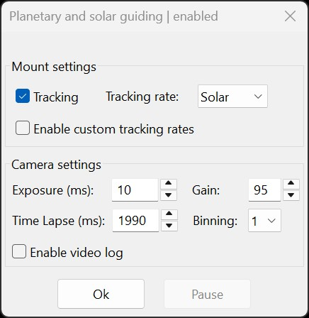

Using PHD2 Solar & Planetary Guiding Tool (Standalone Full Disk Detection Mode)
This section explains PHD2's built-in Full Disk Detection Mode for standalone operation and for sessions in which HelioMaker cannot establish its live physical-camera detection link. The detector supports full circular shapes such as the Sun or Moon and crescent shapes including lunar phases and partial solar eclipses (excluding moments of totality).

To prepare PHD2 for guiding, it is essential to set up your system correctly and configure the detection parameters appropriately.
Adjust Camera Settings and Focus Before Fine-Tuning Detection Parameters
Depending on the physical source of guiding frames (e.g., using the Virtual Planetary Camera in PHD2, where the source is the physical camera used by SharpCap, or a physical camera connected directly to PHD2), adjust the camera's exposure and gain settings to achieve a clear, non-overexposed view. Note that the exposure and gain of the Virtual Planetary Camera are exclusively controlled from SharpCap.
Focus the telescope until sunspots, disk edges, or other surface features are clearly visible. The customized version of PHD2 includes a focus-assisting tool that provides metrics for image sharpness evaluation, displayed in the lower-right corner of the Star Profile window. These metrics can be toggled between SHARPNESS and RADIUS (the detected disk radius in pixels) by clicking the respective label in the Star Profile window. In RADIUS mode, the value will be shown only when the detection algorithm successfully identifies an object, provided the correct detection parameters have been set in the Planetary and Solar Guiding Tool of PHD2. For best results, maximize SHARPNESS by carefully adjusting the focus knob of your guide scope or main telescope. Sharpness is measured within a sample area centered at the point clicked inside the PHD2 main window displaying your object of interest.
When HelioMaker is actively driving non-stellar detection, whether the profile uses the Virtual Planetary Camera or a supported physical PHD2 camera, this tool's local detector controls are largely replaced by Find & Track. PHD2 continues to perform guiding from the position supplied by HelioMaker.
The image below shows the simplified Planetary and Solar Guiding Tool. PHD2 hides its local detection controls while HelioMaker owns detection, because radius, region, sensitivity, and detection results are managed in Find & Track.

Enable Planetary and Solar Guiding
Enable this checkbox to activate the Full Disk Detection Mode. When HelioMaker is driving non-stellar detection, it manages this mode automatically. SharpCap Pro is additionally required only for the Virtual Planetary Camera workflow. When disabled, PHD2 reverts to its default star detection mode, which is intended for traditional stellar guiding.
Enable ROI
Use this checkbox to enable an automatically selected Region of Interest (ROI) to improve processing speed and reduce CPU load. When enabled, the ROI dynamically adjusts to the size and position of the target within the frame, focusing processing resources only on the relevant area and ignoring the rest of the frame.
Min/Max Radii
Adjust the Min Radius (dotted orange circle) and Max Radius (dotted green circle) so they closely match the edges of your target. These dotted circles become visible in the main PHD2 window, which displays the guiding frames, for a few moments whenever you adjust either radius value or click anywhere on the image. Once the detection algorithm identifies the target, a thick green circle will outline the target, and the RADIUS value will appear in the Star Profile window (which can be toggled to display sharpness). It is generally recommended to set the Min Radius slightly smaller (5–10 pixels) and the Max Radius slightly larger (5–10 pixels) than the actual target radius.
For solar or lunar guiding, the Planetary and Solar Guiding tool provides a radius estimate in pixels when you hover over the min radius or max radius labels. This estimate is based on the correctly configured telescope focal length and sensor size. While this feature is useful for setting initial radius values, you may need to adjust them further to match the actual target size. If the estimate significantly differs from the target size, verify the focal length, sensor size, and image binning settings in HelioMaker and PHD2.
👉 Note: while HelioMaker's live physical-camera integration is active, Find & Track performs detection directly rather than merely helping to estimate PHD2's radius values. This PHD2 control remains relevant for standalone or fallback operation. See Find & Track with a Physical PHD2 Camera.
Display Internal Edges/Features
The Display Internal Edges/Features checkbox enables visualization of the contour image used internally by the detection algorithm to locate the best matching circle enclosing the target. When enabled, detected contours are displayed in red color, providing a visual reference for the algorithm's assessment of the target’s shape and boundaries.
The contour depends on several factors, including the target’s shape (e.g., circular or crescent-like), image contrast, focus, and the value of the Edge Detection Threshold.
Enabling this checkbox is particularly helpful for fine-tuning detection parameters. By observing the red contour, you can optimize the Edge Detection Threshold, exposure, and camera gain to achieve stable and reliable target detection. This feature provides immediate feedback, helping refine settings for stable guiding.
Edge Detection Threshold
The Edge Detection Threshold defines how sensitively the detection algorithm identifies the target’s edges.
For best results, it is recommended to enable the Display Internal Edges/Features checkbox. This option displays red-colored internal contour edges, which the detection algorithm uses to fit the best-matching enclosing circle. The goal is to ensure that most of these contour points align with the visible edges of the target’s disk, while avoiding excessive “hairs” or noise. Gradually increase the Edge Detection Threshold until the green circle becomes “stable” and accurately follows the Sun’s edges. Sometimes nudging the threshold slightly above the first stable point provides better margins. Through this process, you can identify the most consistent setting for reliable detection.
“Stable” in this context means that once you adjust the threshold, the algorithm consistently locates the target in the same position with the same radius, as indicated by the thick green circle enclosing it. Ideally, this circle should closely match the target’s visible disk edges.
Under good seeing conditions, a higher Edge Detection Threshold typically yields more precise results. However, if the object’s visibility is reduced - for example, under cloud cover or during the approach to totality in a solar eclipse - lowering the threshold may improve detection accuracy. The key is to balance sensitivity and stability to achieve reliable guiding once you find a threshold value that remains stable over time.
Camera Gain and Exposure
For the Virtual Planetary Camera, exposure and gain are controlled exclusively through SharpCap, and any adjustments
made to these settings in PHD2 will not affect the actual camera configuration. When using a physical camera connected directly
to PHD2, adjust these settings in PHD2 to achieve the desired image quality while avoiding overexposure. Note that PHD2 normalizes
the camera gain range to 0-100, which may differ from the gain values specified by your camera manufacturer.
Tracking Checkbox and Tracking Rate
The Tracking checkbox serves to both display the current tracking status and enable or disable guiding. To prevent accidental changes, PHD2 requires holding the Control key while clicking the checkbox to toggle tracking on or off.
Ensure that your mount's tracking rate is set to match the observed target, such as Sidereal, Solar, or Lunar rates. While PHD2 can correct for minor drift caused by mismatched tracking rates, using the correct rate reduces the need for excessive guiding corrections and enhances overall stability. When HelioMaker's Dynamic Target Tracking feature is available, it can further improve drift performance by updating the mount rate in real time, especially for lunar imaging and to a lesser extent for solar imaging. Note that some mounts use proprietary methods to control tracking rates, which may not be accessible via PHD2’s standard ASCOM commands.
The PHD2 Solar & Planetary Guiding Tool itself does not control Dynamic Target Tracking. Dynamic tracking is configured separately in HelioMaker and works independently from the detection and guiding settings described in this chapter.
Time Lapse (ms)
If you are using short exposure durations, adjust the Time Lapse (ms) setting so the total cycle (exposure + time lapse) approximates 2-5 seconds. This aligns with the standard guiding frequency used in astrophotography.
Binning
The Binning dropdown in PHD2’s Solar & Planetary Guiding Tool lets you adjust the image binning factor for the guiding camera.
When the Virtual Planetary Camera is used in your equipment profile, the binning factor is fixed at 1.
This limitation exists because the Virtual Planetary Camera is shared between SharpCap and PHD2, with binning managed externally by SharpCap.
HelioMaker ensures that the Virtual Planetary Camera’s image size is optimized to prevent excessive image dimensions and CPU load.
If you are using a physical camera directly connected to PHD2 as part of the equipment profile, the binning dropdown will display the available
binning options supported by your camera’s driver. Selecting a higher binning factor reduces the resolution of the image sent to PHD2 for guiding,
which can be advantageous for cameras with large sensors. For planetary guiding, it is recommended to select a binning factor that keeps the
image size manageable, ideally below 2K pixels for the image width. This resolution is sufficient for effective planetary guiding
while optimizing performance.
Enable Video Log
Use this checkbox to enable or disable the video log feature in PHD2. When enabled, PHD2 saves a video log of the guiding frames, which can assist in troubleshooting or reviewing guiding performance. The video log is saved in the same location as PHD2 guiding log files. It is stored in the SER file format, which is compatible with various video players and converters. This log can be helpful for analyzing guiding performance during the session or as diagnostic data when seeking assistance.